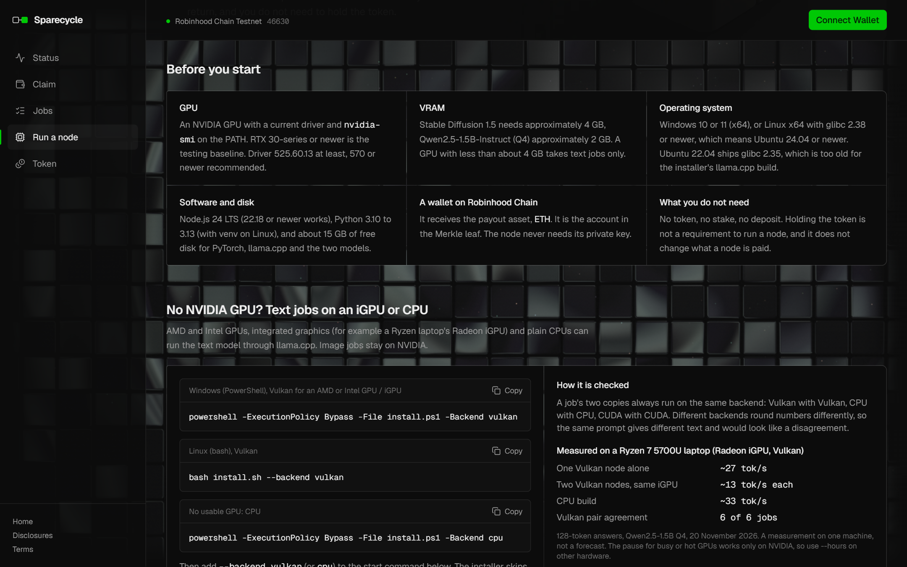
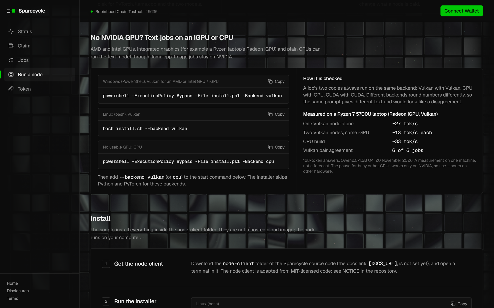
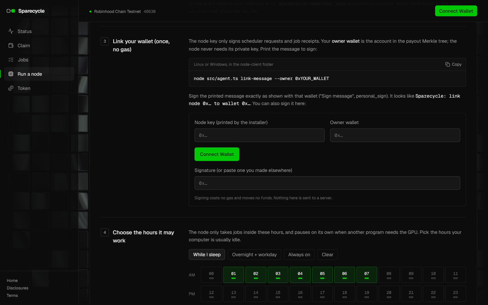
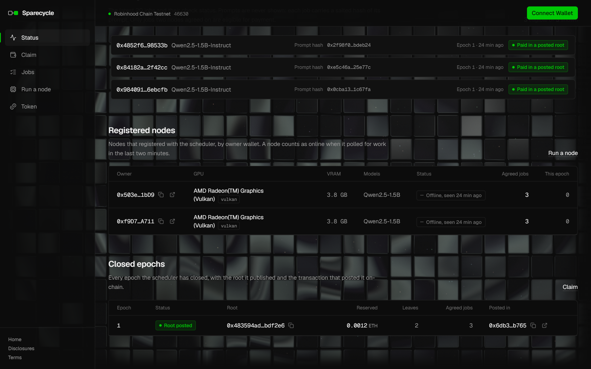

Images on NVIDIA. Text on NVIDIA, iGPU or CPU.
Real output, not a mock-up: Ryzen 7 5700U laptop (Radeon iGPU, Vulkan), Robinhood Chain testnet run, 20 Nov 2026.
NVIDIA RTX 30-series or newer for image jobs. No NVIDIA? An AMD or Intel GPU, an iGPU or a CPU runs the text model.


On this laptop: the Vulkan backend, text jobs only. It fetches pinned llama.cpp and the Qwen2.5-1.5B model, then creates the node key.
The node key signs work. Your wallet only signs this one message and receives payouts; the node never sees its private key.

Two nodes run every job. Only answers that match count, and the epoch's root is posted on-chain for the claim.
